XBIOS 1.0
MSX1 · MSX2 · MSX2+ · turbo R 용 시스템 ROM 입니다. 전원을 켜면 BASIC 대신 파이썬(XPY)이 나옵니다.
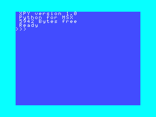
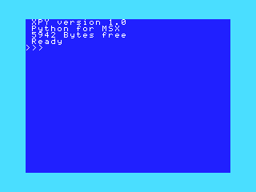
무엇이 다른가요
BASIC 대신 파이썬
함수 · 리스트 · 딕셔너리 · 예외 · 실수를 지원합니다. 같은 게임이 MSX BASIC 보다 2배 이상 빠릅니다.
디스크에서 프로그램을
fs.load("XMAZE.PY") 로 디스크의 프로그램을 실행하고, :save · :load 로 직접 쓴 프로그램을 저장합니다.
한글 화면
MSX2 이후 기종에서 SCREEN 9 한글과 두벌식 입력을 지원합니다. 한글 출력이 원래 BIOS 보다 몇 배 빠릅니다.
turbo R 의 R800
3D 좌표 변환, 회전·확대, 레이캐스트 기능이 있습니다. 3D 변환은 Z80 보다 14.6배 빠릅니다.
예제 프로그램
dist/examples.dsk 의 프로그램입니다. _XPY_DISK 기계에 디스크를 넣고 fs.load("이름.PY") 로 실행합니다.
XWAVE
turbo Rfs.load("XWAVE.PY")플라스마 · 노을 · 장미 곡선 그래픽 데모입니다.
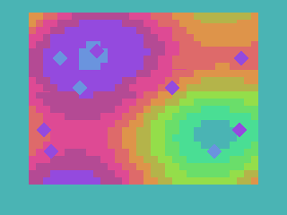
MZEBI
MSX2fs.load("MZEBI.PY")세로 스크롤 슈팅입니다. 아무 키나 누르면 시작합니다. 트리거는 공중 공격, M 은 지상 폭격입니다.
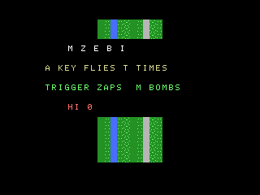
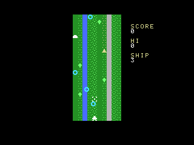
XMAZE
turbo Rfs.load("XMAZE.PY")1인칭 3D 미로입니다. B 를 누르면 자동 시연 후 Z80 과 R800 의 시간을 비교해 보여 줍니다(575 대 107 프레임).
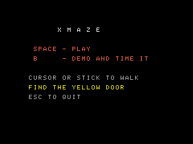
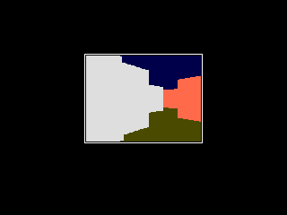
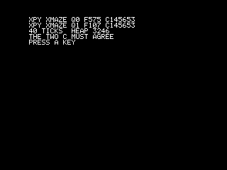
XROTO
turbo Rfs.load("XROTO.PY")회전·확대 데모입니다. 리턴 키를 누르면 무늬가 두 겹이 됩니다.
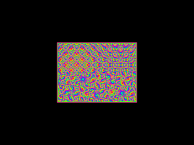
XPOLY
turbo Rfs.load("XPOLY.PY")삼각형 · 사각형 · 큐브를 회전합니다.
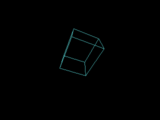
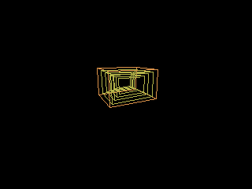
BALLS · MANDEL · LIFE
MSX2 이후fs.load("BALLS.PY")공 32개 · 만델브로 집합 · 라이프 게임입니다. examples/*.BAS 에 같은 알고리즘의 MSX BASIC 판이 있습니다.
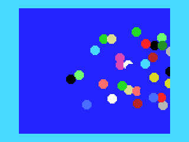
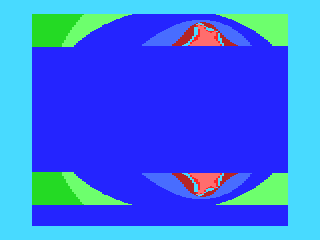
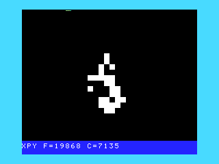
XSHOT
turbo Rfs.load("XSHOT.PY")가로 스크롤 슈팅입니다.
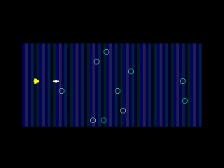
XROAD
MSX1fs.load("XROAD.PY")마주 오는 차를 피하는 게임입니다. 스페이스는 시작, B 는 자동 시연입니다.
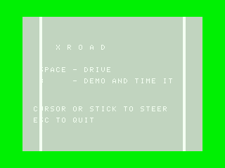
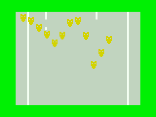
XCLAIM
MSX2fs.load("XCLAIM.PY")선을 그어 땅을 차지하는 게임입니다.
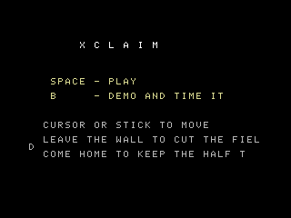
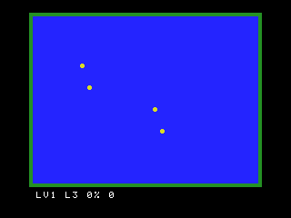
SUNGJUK
MSX2fs.load("SUNGJUK.PY")SCREEN 9 한글 화면의 성적처리 프로그램입니다. 1980년대 고등학교 성적일람표 형식으로 총점, 평균, 석차, 평어(수·우·미·양·가)를 냅니다. 키를 누르면 학생별 성적통지표가 나옵니다.
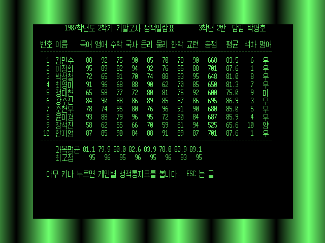
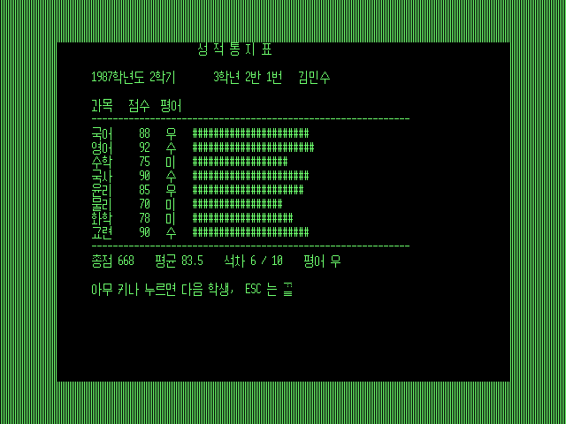
SHEET
MSX2fs.load("SHEET.PY")SCREEN 9 한글 화면의 계산표입니다. 셀에 숫자, 글자, 수식(=B2*C2, =SUM(D2:D6))을 넣으면 바로 다시 계산합니다. 방향키로 이동하고 RETURN 으로 입력, DEL 로 지웁니다.
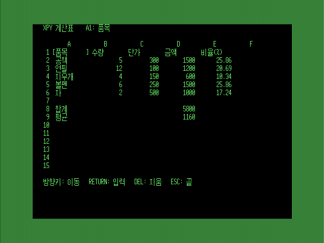
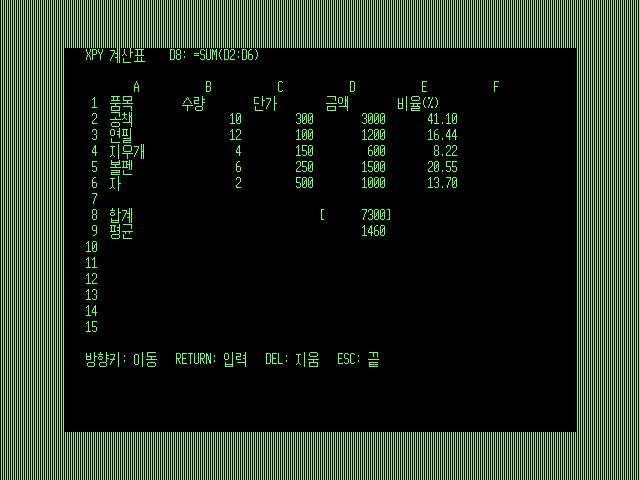
직접 써 보기
블록은 빈 줄로 끝납니다.
모듈: screen · sprite · key/joy · sound · fs · time · math · random · turbo 등. 함수 목록은 md/XPYAPI.md.
배포판에 든 것
| 경로 | 무엇 |
|---|---|
dist/openmsx/ | openMSX 용 기계 구성 열둘(세대마다 XBIOS만 · XPY · XPY+디스크)과 ROM |
dist/bluemsx/ | blueMSX 용 기계 구성(MSX1 · MSX2 · MSX2+, XPY 와 디스크 드라이브 포함) |
dist/examples.dsk | 위 예제 프로그램이 든 디스크 |
dist/xbios_1.rom | 실기 MSX1 용 32KB ROM |
dist/xbios_2*.rom · xbios_tr*.rom | MSX2 · MSX2+ · turbo R 의 본체 ROM 과 SUB-ROM |
dist/xpy/ · dist/xdisk/ | XPY ROM(128KB) · 디스크 인터페이스 ROM |
demo/pydemo.rom | 디스크 없이 꽂기만 하면 되는 XPY 데모 카트리지(MSX2 이후) |
examples/ | 예제의 파이썬 소스와 비교용 MSX BASIC 판 |
알아 두실 점
- MSX2 이후는 에뮬레이터에서만 시험했습니다.
- XPY 는 RAM 64KB 가 필요합니다. 디스크 기능은 XDISK 가 있는 구성에서 동작합니다.